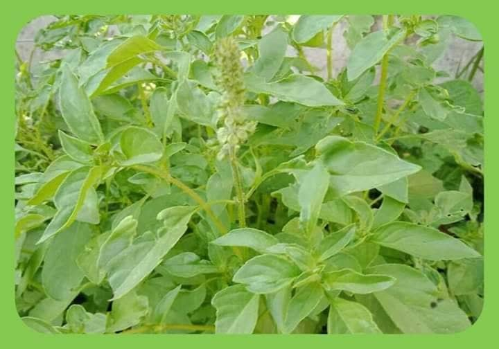

ဆေးဖက်ဝင် ပင်စိမ်းပင်

ပင်စိမ်းပင်သည် မြန်မာနိုင်ငံနှံ့အပြားတွင် ပေါက်ရောက်ပြီး အပူပိုင်းဒေသတွင် ပိုမို၍ ပေါက်တတ်ကြသည်။
ပင်စိမ်းပင်သည် သဘာဝအလျောက် ပေါက်ရောက်သော အပင်ဖြစ်သည်။ စိုက်ပျိုး၍လည်းရသည်။ မျိုးစေ့မှတဆင့် အပင်စိုက်ရန် လွယ်ကူသောအပင် ဖြစ်သည်။
မြေသြဇာ အထူးမလိုအပ်လှပေ။ တနှစ်လျှင် နှစ်ကြိမ်၊ သုံးကြိမ် အရွက်ကို ရယူနိုင်၏။ နောက်ကျလျှင် အလိုလို ကြွေကျသွားသဖြင့် ဂရုပြုဖို့ လိုအပ်လှပေသည်။ အရွက်နှင့် အစေ့ကို ဆေးအဖြစ် အများဆုံး အသုံးပြုကြသည်။
ပင်စိမ်းပင်သည် အပင်ငယ်မျိုးဖြစ်ပြီး အမြင့်နှစ်ပေမှ သုံးပေခန့်အထိ ရှိ၏။ အရွက်မှာ သေးပြီးစိမ်းလျက် နူးညံ့၏။ ရွက်နားမှာ လွှသွားပုံရှိသည်။ အပွင့်ဖြူကလေးများပွင့်တတ်ကာ ရနံ့မှာ အလွန်မွှေးသဖြင့် အချို့သူများမှာ ယင်းချက်ရာတွင် အမွှေးနံ့ရစေရန် ဟင်းခတ်၍ အုပ်ကာ ချက်စားကြသည်။
အပွင့်များသည် အခို်င်လိုက်ပွင့်၍ ပွင်ချပ်များပေါ်တွင် အမွေးနုကလေးများ ရှိသည်။ တပေါင်း တန်ခူးလများ၌ ပွင့်တတ်ကြသည်။ အရသာမှာ ပူစပ်သော အရသာဖြစ်ကာ ပင်စိမ်းမျိုးအနေဖြင့် ပင်စိမ်းဖြူ၊ ဟင်းစားပင်စိမ်း၊ ပင်စိမ်းနက်၊ ပင်စိမ်းညို၊ ပင်စိမ်းကြီး၊ ဗလရှင်ကင်ဟူ၍ ပင်စိမ်းအမျိုးမျိုးရှိကြသည်
။ မြန်မာဆေးကျမ်း အလိုအရ ပင်စိမ်းသည် ပူ၏၊ စပ်၏၊ အနည်းငယ်ခါး၏၊ လေသလိပ်ကို နိုင်၏၊ ဆီးကိုနိုင်၏၊ လေကိုသက်စေပြီး သွေးကို တက်စေနိုင်သည်၊ ရင်ကျပ်နာ၊ အစာမကြေ၊ ချွဲကျပ်နာတို့ကို နိုင်၏၊ ချောင်းဆိုးနာ၊ ပိုးနာ၊ ထိုးကျင်သောအနာကို ပယ်နိုင်၏။
အစာကြောခြင်း၊ ခံတွင်းကောင်းခြင်း၊ အနံပကောင်းခြင်း၊ အသံသာခြင်း၊ အသက်ရှည်ခြင်းကို ရရှိစေသည်။ လူကို အကျိုးပွားစေသည်။ ပင်စိမ်းရွက် ပင်စိမ်းအစေ့များကို မြန်မာ့ဆေးဝါးအဖြစ် အသုံးပြုပုံများမှာ အောက်ပါအတိုင်း ဖြစ်ပါသည်။
(၁) နားကိုက်=ပင်စိမ်းရွက်ကို မီးအုံးပြီး နားထဲသို့ အရည် နှစ်စက်လောက်ကျအောင် ညှစ်ထည့်ပေးပါ။
(၂) သွားကိုက်=ပင်စိမ်းသတ္ထုရည်နှင့် ငရုတ်ကောင်း၊ ပရုတ်တို့ကို ကြိတ်ပြီး အလုံးကလေးများလုံး၍ သွားပိုးစားသည့် သွားအခေါင်းထဲသို့ ထည့်ပေးပါ။ ပျောက်ကင်းသွားပါမည်။
(၃) ကလေး ကျောပူ ခေါင်းပူ=ပင်စိမ်းရွက်နဲ့ ကွမ်းရွက် ဆတူယူ၍ ကျပ်ခိုးနှင့် နနွင်းမှုန့် အနည်းငယ်ဖြင့် ရောကြိတ်ပြီး လိမ်းပေးပါ။ (တကိုယ်လုံး ခပ်ပါးပါး လိမ်းပေးပါ)
(၄) ခေါင်းတခြမ်းကိုက်=ပင်စိမ်းရွက်သတ္ထုရည် လတ်လတ်ဆတ်ဆတ် ညှစ်ရည်ကို ယူ၍ နားထင်နှင့် နဖူးတွင် လိမ်းပေးပါ။
(၅) ဆီးချုပ်၊ ဆီးအောင့်၊ အသည်းရောင်၊ အသားဝါ=နှမ်းစေ့နှင့် ပင်စိမ်းစေ့ကို ဆတူကြိတ်ပြီး ထန်းလျက်နဲ့တေ၍ ဆီးကင်းလောက် အလုံးလေးများ လုံးထားပါ။ ခြောက်အောင် နေလှန်းပြီး နံနက်-ည တလုံးကျစီ စားပေးပါ။ ထိုသို့စားပေးခြင်းဖြင့် လိပ်ခေါင်းရောဂါ၊ မြင်းသရိုက်နာ ရောဂါများ ပျောက်၏။
(၆) သားသမီး ဝေးလိုသော်=ပင်စိမ်းရွက် လက်တွင်းတဆုပ် ပြုတ်ရည်တပန်းကန်ကို ဥတုသွေးလာပြီးသည့်နောက် သုံးရက်ဆက်တိုက် သောက်ပေးပါ။
(၇) အဖျားနာတာရှည်=န့နက်စောစော ပင်စိမ်းရွက်သတ္ထုရည် ကြွေဇွန်းသတ္ထုရည် တဇွန်းကျ သောက်ပေးပါ၊ အဖျားကျသွားပါမည်။
(၈) ငှက်ဖျား=ပင်စိမ်း လတ်လတ်ဆတ်ဆတ် လေး-ငါးရွက်မျှကို ငရုတ်ကောင်းစေ့အနက် သုံးစေ့၊ တပတ်လျှင် နှစ်ကြိ်မ် မှန်မှန်သောက်ပေးပါ။
(၉) ပွေးနာ၊ အရေပြား ယားနာ=ပင်စိမ်းရွက်ကို သံပုရာရည်နှင့် ရောပြီး ညက်နေအောင် ထောင်းပါ၊ ထိုထောင်းထားသည့် အရွက်ဖြင့် ပွတ်တိုက်ပေးပါ အုံပေးပါ။
(၁၀) အစာမကြေ၊ ဝမ်းကိုက်=ပင်စိမ်းရွက်ပြုတ်ရည်ကို သောက်ပေးပါ။ သတ္ထုရည်သောက်ပေးပါ။
(၁၁) လည်ချောင်းနာ၊ အသံဝင်=ပသ်စိမ်းစေ့ (ပင်ပွား)ကို ရေစိမ်၍ ထိုရေကို သောက်ပေးပါ။
(၁၂) အိုင်းအနာ၊ အဖုအနာ=ပင်စိမ်းရွက်ပြုတ်ရည်ကို အဖုအနာများနှင့် အိုင်းနာများအပေါ် ဖန်ရည်ဆေးပေးပါ။ အနာ၌ ပိုးတွယ်ခဲ့လျှင် ပင်စိမ်းရွက်ခြောက်မှုန့်ကို ဖြူးပေးပါ။
(၁၃)အရေပြားအနာများ=(အရေပြားရောဂါဟူသမျှ) ပင်စိမ်းရွက် သတ္ထုရည် (၅၀)ကျပ်သား၊ နှမ်းဆီ (၁၅)ကျပ်သား ရော၍ မီးမျှဉ်းမျှဉ်းနှင့် ရေခန်းသည်အထိ ချက်ပေးပါ။ ထိုဆီဖြင့် အရေပြားနာ၊ ယားယံနာ ဟူသမျှ လိမ်းပေးပါ။
ယင်းဆီသည် ရေနွေးအကြမ်းပန်းကန် တလုံးထဲသို့ ဆီနှစ်စက် သုံးစက်ချပေးပြီး ပူပူလေး မှုတ်၍ သောက်ပေးပါက နှာစေး အအေးမိ ချောင်းဆိုးရောဂါများကိုပင် ပျောက်စေပါသည်။ ထိုဆီဖြင့် လိမ်းထားပါက မှက် ဖြင်များ မကိုက်ပါ။
(၁၄) ဗိုက်ကြောပြတ်=(ကိုယ်ဝန်ဆောင်) ဗိုက်ကြောပြတ်ပြီး ယားယံနေပါက ပင်စိမ်းရွက်ခြောက်မှုန့် ဖြူးပြီး ပွတ်သပ်ပေးပါ။
(၁၅) ဝက်ခြံ၊ တင်းတိပ်၊ ညှင်း၊ အဖြူကွက်=ပင်စိမ်းရွက် သတ္ထုရည်ကို လိမ်းပေးပါ။
(၁၆) ကလေး သန်ကျ=ပင်စိမ်းသတ္ထုရည်ကို တိုက်ပေးပါ။
(၁၇) နားအူ၊ နားကိုက်၊ နားပြည်ယို=ပင်စိမ်းရွက် သတ္ထုရည်ကို ဇွန်းဖြင့်ထည့်၍ မီးဖြင့်အပူပေးပါ။ ထိုသတ္ထုရည် နွေးနွေး နှစ်စက် သုံးစက်ခန့် ထည့်ပါ။
(၁၈) နှာခေါင်းနှာပိတ်၊ နှာခေါင်းအတွင်းမြှေးရောင်=ပင်စိမ်းရွက်ကို အခြောက်လှန်းပြီး ညက်နေအောင် အမှုန့်ထောင်းပါ။ နှာဆေးအဖြစ် အသုံးပြုပါ။
(၁၉) ငှက်ဖျားတုန်ချမ်း=ပင်စိမ်းအမြစ်ကို ရေသုံးခွက်တခွက်တင် ကျိုပြီး သောက်ပေးပါ။ ချွေးထွက်လာပြီး အဖျားကျသွားပါမည်။
(၂၀) ပျား၊ ပုရွက်ဆိတ်၊ ကင်း အဆိပ်ရှိအကောင် ကိုက်လျှင်=ပင်စိမ်းပင် ပဥ္စငါးပါးကို ထုထောင်းပြီး အုံပေးပါ။
(၂၁) လည်ချောင်းနာ၊ ပန်းနာ၊ ချောင်းခြောက်ဆိုး=ပင်စိမ်းပွင့် အတ့လိုက်ကို ချင်းခြောက်၊ ကြက်သွန်နီနှင့် ထုထောင်း၍ ပျားရည်နှင့် ရော၍ လျှက်ပေးပါ။ သလိပ်မရသည့် ချောင်းဆိုးနာများ ပျောက်ကင်းစေပါသည်။
(၂၂) သားသမီး ဝေးလိုသော=အမျိုးသားများ ပင်စိမ်းရွက်ဆယ်ရွက်ကို နေ့စသ်စားပေးပါ။ ကျန်းမာရေးကို လုံးဝမထိခိုက်စေဘဲ ပိုမို၍ သွက်လက်ထက်မြက်စေကြောင်း အိန္ဒိယဆေးသုတေသနမှ ထုတ်နုတ်ဖော်ပြခဲ့၏။
(၂၃) ချောင်းဆိုးပျောက်=ပင်စိမ်းရွက် သတ္ထုရည်ကို ပျားရည်နှင့် ဆတူရောပြီး တနေ့သုံးကြိမ် သောက်ပေးပါ။ သလိပ်ရွှင်ပြီး ချောင်းဆိုးပျောက်စေ၏။
(၂၄)အစာအိမ်အချဉ်ပေါက်လေနာ=ပင်စိမ်းရွက်ခြောက်ကို ရေနွေးစိမ်၍ ရေနွေးကြမ်းသောက်သလို သောက်ပေးပါ၊ ကလေးများ လေထိုး၊ လေအောင့်ရောဂါပါ ပျောက်ကင်းစေနိုင်ပါသည်။
(၂၅) အအေးမိ၊ နှာစေး၊ ချောင်းဆိုး=ပင်စိမ်းရွက်အစိုကို သုံးခွက်တခွက်တင်ကျိုပြီး ပူပူလေးသောက်ပေးပါ။ တုပ်ကွေးရောဂါများကိုပင် ပျောက်ကင်းစေနိုင်ပါသည်။
(၂၆) အဆုတ်ရောဂါ၊ ပန်းသေ ရောဂါ၊ မျက်စိရောဂါ၊ ချောင်ဆိုးပန်းနာ=မျောက်သားကိုကင်၍ ပင်စိမ်းနိုင်နို်င်နှင့် ကြော်စားပါ။
(၂၇) လေငန်း၊ လေဖြတ်၊ အဆစ်ရောင်=ပင်စိမ်းပဥ္စငါးပါးကို ရေနွေးဖျော၍ အငွေ့ကိုရှူပေးပါ။
(၂၈) မြွေနှင့် အဆိပ်ရှိသတ္တဝါ ကိုက်ခဲပါက=ပင်စိမ်းရွက်နှင့် ပျဉ်းတော်သိမ်ရွက်ကို ဆတူကြိတ်၍ ဆီးသီးလုံးခန့် နံနက်တလုံး၊ ညတလုံး စားပေးပါ။ ကိုက်ခံရသည့် ဒဏ်ရာတွင် ကြိတ်ဖတ်ကို အုံ၍ အဝတ်ဖြင့် စည်းပေးပါ။
(၂၉) သူငယ်နျာ ကျောပူခေါင်းပူ=ပင်စိမ်းရွက်၊ ကွမ်းရွက်၊ နနွင်းမှုန့်၊ ကျပ်ခိုး အနည်းငယ်ရောကြိတ်၍ ကလေးကို ခပ်ပါးပါး လိမ်းပေးပါ။ ဦးခေါင်းမှ ခြေဖျားအထိ သပ်ချပေးပါ။
(၃၀) မီးဖွားပြီးစ အပုပ်ဆန်=ပင်စိမ်းရွက် ကြော်စားပါ။
(၃၁) ပန်းသေ၊ ပန်းညှိုး၊ ဝမ်းပျက်=ပင်စိမ်းရွက်ကို ငါးခူ၊ ငါးကျည်းနှင့်ဖြစ်စေ ဆိတ်သား၊ ခိုသားနှင့်ဖြစ်စေ ကြော်စားပေးပါ။(သို့) ငါးပနော်နှင့် ကြော်စားပါ။
(၃၂) ဆီးရောဂါ=ပင်စိမ်းရွက်ရည် လိမ်းပေးပါ။ အပူငြိမ်းပြီး အဆိပ်ကို ကြေစေသည်။
(၃၃)ကင်းမြီးကောက်ကိုက်=ပင်စိမ်းရွက်ကြိတ်၍ အုံပေးပါ။
(၃၄) ချောင်းဆိုးနပန်းနာ=ပင်စိမ်းပွင့်၊ ချင်းခြောက်၊ ကြက်သွန်ဖြူ ထုထောင်း၍ ပျားရည်နှင့် လျက်ပေးပါ။
(၃၅) သလိပ်ကပ် ချွဲကျပ်=ပင်စိမ်းရွက်ကို လက်တဆုုပ်ခန့်ခူး၍ အရည်ထွက်စေရန် ကြိတ်ခြေညှစ်ပေးပါ။ ထွက်လာသည့် အရည်အား ရေကျက်အေးနှင့် သောက်ပေးပါ။ တနေ့လျှင် နှစ်ကြိမ် သောက်ပေးပါ။ နေ့လယ်မွန်းတည့် သောက်ပါ။ သုံးရက် ဆက်သောက်ပေးပါ။
(၃၆) ဆီးရောဂါ၊ သွေးအကျိတ် အခဲရောဂါ၊ ဆီးပုပ်၊ ဓာတ်ပုပ်၊ သလိပ်ပုပ်=ပင်စိမ်းအစေ့ကို အခြောက်လှန်းပြီး အနည်းငယ်ထောင်းပါ၊ နွားနို့ သကြားတို့နှင့် ဖျော်သောက်ပေးပါ။ အထက်ပါ ရောဂါများသာမက သွေးအကျိတ်အခဲ ရောဂါများပင် ပျောက်ကင်းစေပါသည်။
(၃၇) ဆီးအောင့်၊ အမောသက်သာ=ပင်စိမ်းစေ့ကို သကြားရည်နှင့် ဖျော်ရည်ပြု၍ သောက်ပေးပါ။
(၃၈) မစားချင်၊ မသောက်ချင်၊ အစာအိမ်လေနာ၊ ဝမ်းနာ=ပင်စိမ်းရွက် သတ္ထုရည်ပြု၍ သောက်ပေးပါ။
(၃၉) နှလုံး၊ ကျောက်ကပ်ရောဂါ၊ နှမ်းစေ့=ပင်စိမ်းနှင့် ထန်းလျက်ကို ဆတူကြိတ်၍ ပျားရည်နှင့်တေပါ။ နံနက် တလုံး၊ ညအိပ်ရာဝင်တလုံး စားပေးပါ။ ထိုသို့ စားပေးခြင်းဖြင့် သွားဖုံးရောင်ခြင်း၊ သွားကိုက်ခြင်း၊ နားကိုက်ခြင်းများအပြင်
ပွေး၊ ဝဲ၊ နှင်းခူနာနှင့် မြင်းသရိုက်ရောဂါများကိုပါ ပျောက်ကင်းစေပါသည်။
(၄၀) သားကျည်းကိုက်၊ သားအိမ်လျှော၊ နို့ချောင်းပိတ်၊ ဆီးအောင့်=ပင်စိမ်းရွက်ကို ငါးကျည်းခြောက်နှင့် ကြော်စားပေးပါ။ ထိုသို့ စားပေးခြင်းဖြင့် မီးဖွားပြီးစ အပုပ်ဆန်တတ်သော ရောဂါများပင် ပျောက်ကင်းစေ ပါသည်။
အစားမှား၍ ဆေးမှား၍ အော့အန်ခြင်းများကိုပင် ပျောက်ကင်းစေ၏။ ပင်စိမ်း၏ ဂုဟ်အစွမ်းအကျိုးများကား များပြားလှပါသည်။ ဉာဏ်ရှိသလို စားသုံးပေးခြင်းဖြင့် ရောဂါများကို ပျောက်ကင်းစေသည့် ပင်စိမ်းရွက်များ ဖြစ်ပါသည်။